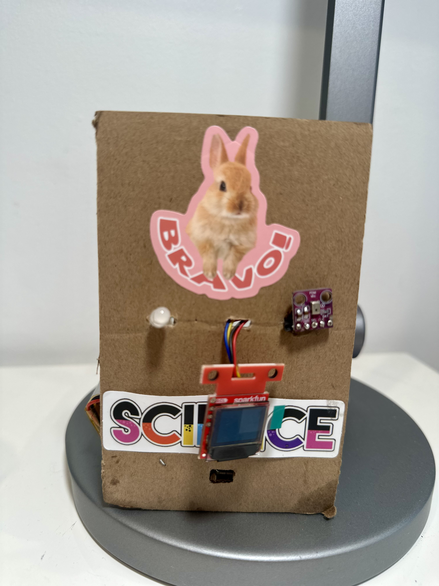
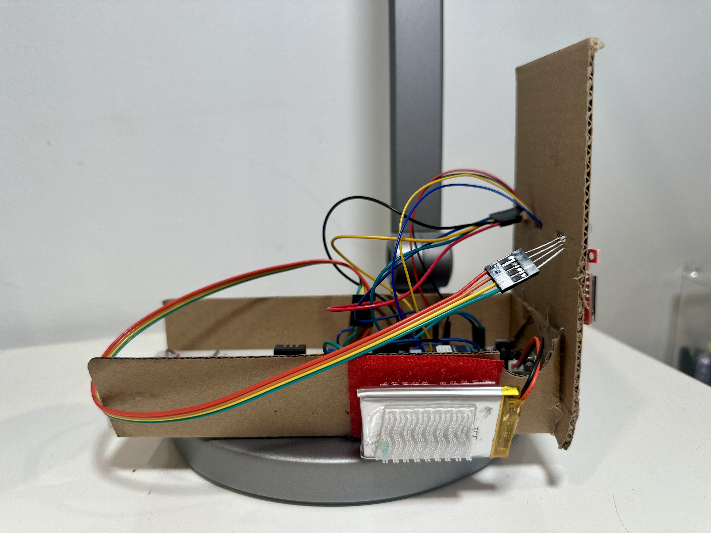
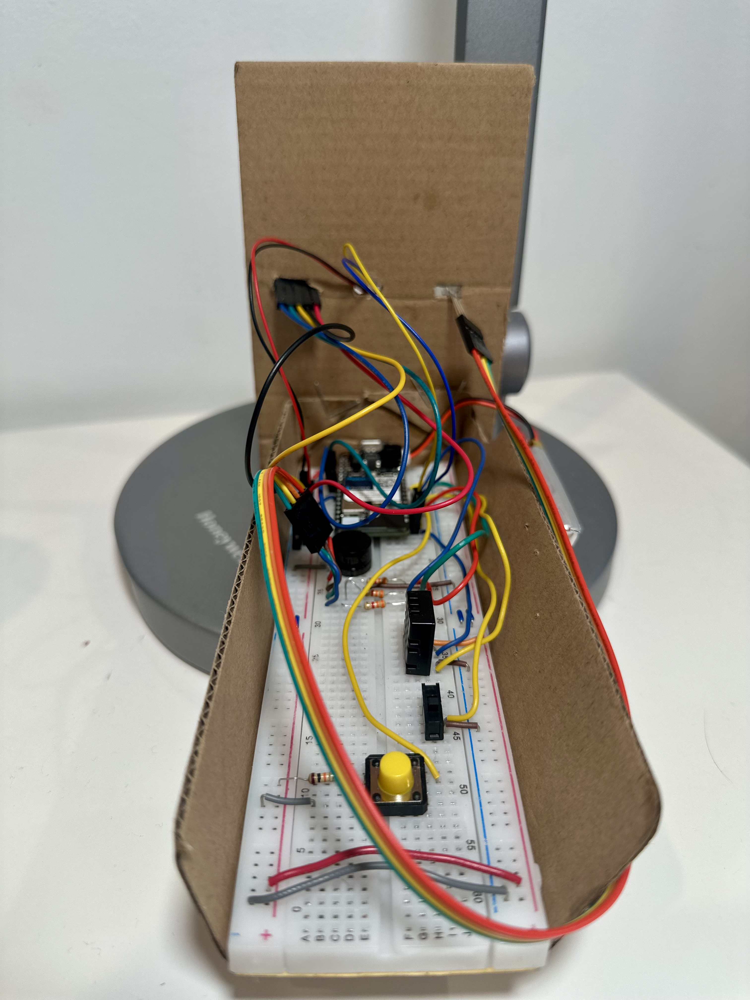
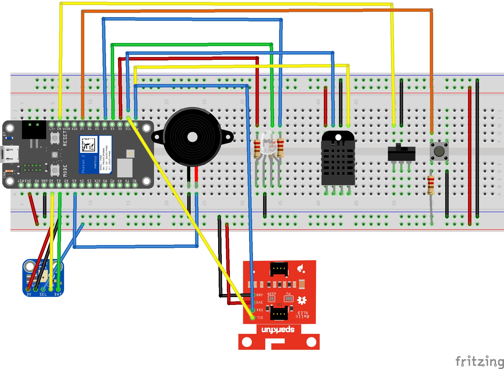
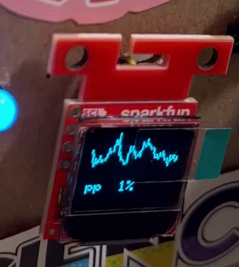
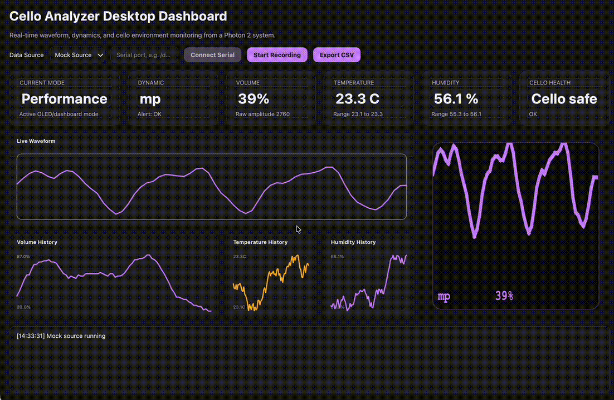

Performance
Estimates sound level from PDM audio, maps it to musical dynamics, and draws the waveform on the OLED.
Embedded Performance and Environment Monitoring
Project Summary
The Cello Analyzer combines a PDM microphone, DHT20 environmental sensor, SparkFun MicroOLED, RGB LED, buzzer, Particle Cloud, Initial State, Blynk, and a PySide6 desktop dashboard to monitor live playing dynamics and safe storage conditions in one device.
pp to ff
Performance
Estimates sound level from PDM audio, maps it to musical dynamics, and draws the waveform on the OLED.
Environment
Tracks temperature and humidity to determine whether the cello is in a safe, cautionary, or problematic environment.
Feedback
Uses an RGB LED, buzzer, OLED pages, Initial State, Blynk, and a desktop dashboard for live feedback and logging.
Build
| Component | Pin | Purpose |
|---|---|---|
| PDM Microphone | A0 | Microphone clock signal |
| PDM Microphone | A1 | Microphone data input |
| RGB LED Red | D2 | Red channel for visual feedback |
| RGB LED Green | D3 | Green channel for visual feedback |
| RGB LED Blue | D4 | Blue channel for visual feedback |
| Piezo Buzzer | A5 | Audio feedback for dynamic transitions |
| Enable Switch | D6 | Turns the system on or off |
| Pushbutton | D7 | Cycles through OLED pages |
| MicroOLED Display | I2C | Displays waveform, dynamics, and environment data |
| DHT20 Sensor | I2C | Measures temperature and humidity |
| LiPo Battery | JST battery connector | Portable power supply |



Wiring Diagram

Display System
pp, p, mp, mf, f, and ff
The waveform is drawn on the first page by drawPerformanceScreen() in src/celloanalyzer.cpp.

Connectivity
Initial State Event
The project publishes the event Cello_Analyzer every 2500 ms using millis()-based timers.
[
{"key":"volume","value":42},
{"key":"temperature","value":23.2},
{"key":"humidity","value":55.4},
{"key":"dynamic","value":"pp"}
]Cloud Variables
modedynamicvolumerawtemphumalertcelloHealth| Initial State Tile | Type | Purpose |
|---|---|---|
| Humidity | Gauge Tile | Displays current humidity with a visible safe-range region |
| Temperature | Gauge Tile | Displays current temperature in Celsius using a thermometer-style visualization |
| Volume | Line Graph Tile | Displays historical trend of volume percentage over time |
| Current Dynamic | Summary Tile | Displays the current dynamic label such as pp, mp, or f |
| Most Frequent Dynamic | Summary Tile | Displays the most commonly occurring dynamic over recorded history |
| Humidity | Line Graph Tile | Displays historical humidity trend over time |
| Temperature | Line Graph Tile | Displays historical temperature trend over time |
| Blynk Datastream | Virtual Pin | Data Type | Purpose |
|---|---|---|---|
| Switch Mode | V0 | Integer | Virtual page-change button |
| Current Mode | V1 | String | Displays current OLED mode |
| Dynamic | V2 | String | Displays current musical dynamic |
| Current Volume | V3 | Integer | Displays current volume percentage |
| Current Temperature | V4 | String | Displays current temperature |
| Current Humidity | V5 | String | Displays current humidity |
| Current Health | V6 | String | Displays cello health message |
| Current Environment | V7 | String | Displays environment status |
| Dynamic History | V8 | String | Displays recent dynamic history summary |
| Temp History | V9 | String | Displays temperature high/low summary |
| Humidity History | V10 | String | Displays humidity high/low summary |
PySide6 App
A PySide6 desktop version of the project is included in the repository and mirrors the embedded system with live waveform visualization, environmental monitoring, and an OLED-style preview panel.

Portfolio Video

Sizzle reel: click here | Technical walkthrough: click here
Copyright (c) 2026 wuisabel-gif. All rights reserved.